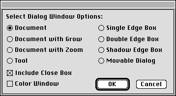
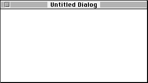
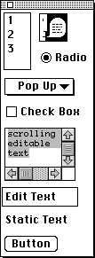
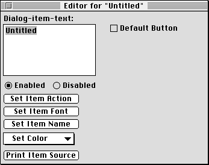
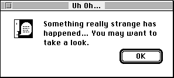
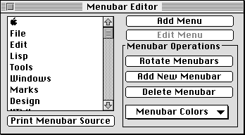
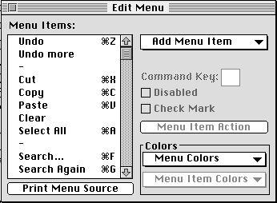
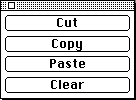

Graphical user interfaces (GUIs) have changed the way that people use computers. High-end Lisp systems had sophisticated GUIs as far back as the late 1970s, with low-cost consumer computers adopting GUIs in 1984. Modern Lisp systems include tools to build GUIs using both platform-specific and platform-independent techniques. The former can take advantage of proprietary features of the platform's user interface, while the latter provide an abstraction that is portable across multiple platforms.
Events are key to the operation of all GUIs. An event is a gesture initiated by the user: typically a keystroke, mouse movement or click, menu selection, pen stroke, or speech utterance. An event can occur at any time. This means that the program must be prepared to handle any event at any time in some meaningful way. The interpretation of an event will depend upon the current state of the program, e.g. what windows are visible on the screen and what each window is displaying. An event may change the state of the program and therefore affect the interpretation of later events. But in all cases, the program must be prepared to handle receipt of any event at any time.
Event-driven programs have a control structure known as an event loop. The event loop receives events and dispatches them to some part of the program, normally the portion of the program that is in control of the current focus, or site of user interest, among all of the information currently displayed by the program.
The next, and more obvious, characteristic of graphical user interfaces is that they rely entirely upon graphics. Even text is displayed as a graphical image. Of course, it would be incredibly painful (and silly) for every programmer to write programs to render text, lines, circles, boxes, menus, controls, etc. The operating system provides a collection of library routines to draw graphical objects, windows, and controls; the Lisp environment typically provides wrappers (often by use of the Lisp foreign function interface) around the graphics routines so that they may be called from within Lisp.
The availability and implementation details of graphics routines vary widely from platform to platform. You should consult the documentation for your Lisp implementation to learn about how it supports graphics.
Macintosh Common Lisp (MCL) provides access to the underlying graphical toolkit of the Macintosh OS in two ways. MCL provides a high-level interface for presenting windows, menus, controls, text, and graphics. This interface is at a higher level of abstraction than the underlying OS primitives; it separates the programmer from concerns about memory allocation, record layout, and pointers. MCL also provides a low-level interface that lets you program with the underlying OS routines (not just for graphics, but for the entire OS). When you use the low-level interface, you are faced with all the concerns that dog a C or Pascal programmer -- only the syntax is different.
In addition to the programmer's interfaces to the Macintosh OS, MCL also provides a tool for visual construction of user interface elements. The Interface Toolkit lets you design windows and dialogs by simply specifying a particular type of new window, then dropping user interface elements into the window. The Interface Toolkit also provides an editor for menus. When you are satisfied with the appearance of your new window or menu, the Interface Toolkit will emit the Lisp code needed to reconstruct it from scratch.
MCL's Interface Toolkit allows you to create dialogs and menus. To create a dialog, you first select a window style.

Here, I've chosen to create a simple document window.

A palette of controls appears near the new window. From this palette you can drag and drop controls to create the desired window layout.

Each control dragged onto the window can be moved and resized. You can also edit attributes of the control, as shown here for a button control.

Less than a minute later, I've finished this simple dialog. I can now use a menu command to dump the Lisp source text which will recreate this dialog.

The Interface Toolkit also lets you create and edit menubars, menus, and menu items. You begin with the menubar editor.

Here, I've chosen to edit MCL's Edit menu.

While you're editing menus, you may not have access to an Edit menu and its Cut, Copy, Paste, and Clear commands. MCL provides a palette with these controls during menu editing.

A platform-independent interface abstracts away details of the underlying operating system's GUI, providing its own event loop, windows, menus, and controls. When you write a GUI using these abstractions, the code can be moved to any other Lisp platform (assuming availability of the platform-independent interface) through recompilation.
CLIM is a commercially-supported platform-independent user interface available on all Lisp platforms. CLIM 2.0 even preserves the native look and feel of each platform by mapping platform-independent requests for windows, menus, and controls onto calls to the native OS graphics services.
Garnet is a free, unsupported platform-independent user interface that is available for most Lisp platforms. Source code is freely available, so you could port Garnet to a new platform if you are so inclined. Unlike CLIM 2.0, Garnet uses its own definitions for windows, menus, and controls; this means that a Garnet GUI will look the same regardless of platform.